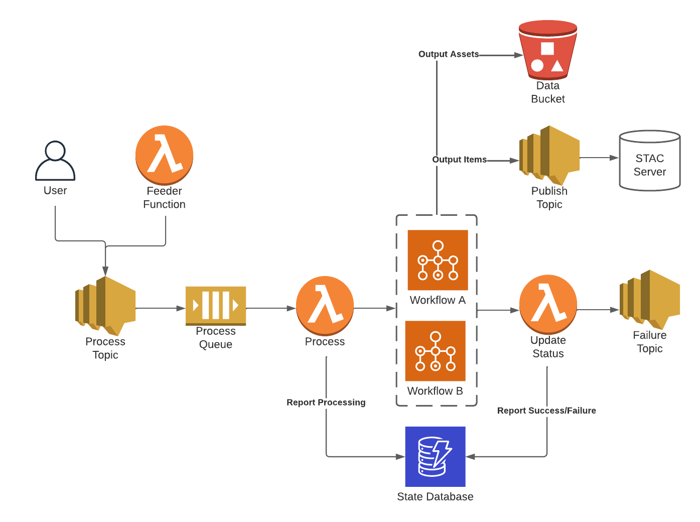
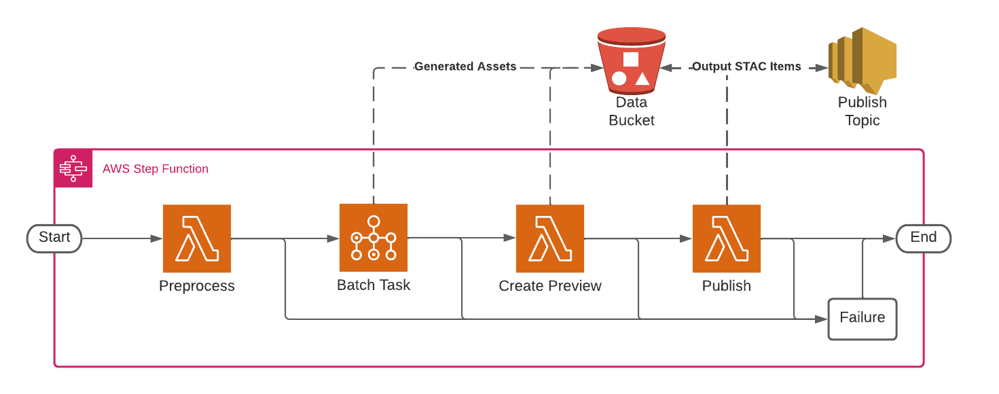

Cirrus architecture
Cirrus overview
An overall picture of Cirrus looks like this:
As shown in that diagram, input Cirrus Process Payloads are published into an
input SNS topic via users or automated Feeder
processes. Those input payloads are enqueued in an SQS queue for processing by
the process lambda. process creates or updates the State DB record for the payload and starts a Workflow execution by dispatching the payload to the
specified Workflow.
Any output items and their assets are persisted to S3, and the output items are published to an output SNS topic that can notify downstream subscribers like stac-server of newly-processed items.
At the end of a workflow execution an EventBridge event is triggered, which
notifies the listening update-state lambda that the execution has
completed. update-state updates the State DB record for the processed
payload in accordance with the final workflow state (success, failed, aborted,
or invalid), and triggers any necessary follow-up actions. For example, failed
or invalid executions can trigger notifications to the Failure/Invalid SNS
topic(s), and successful payloads using workflow chaining can be re-enqueued for the next stage of the
processing chain.
Workflow structure
Workflows are composed of one or more Tasks, which use an input Cirrus Process Payload to define input metadata/assets for the Task processing. A workflow could look something like this:
This example workflow begins with a preprocessing step to do some initial metadata modifications. Following that, a batch task to perform some computationally-intensive manipulation of the input item data assets, and a create preview task then generates a new preview image asset. The workflow ends with a publish task step, which pushes the final generated item to S3 for persistence and the Cirrus publish SNS topic for and subscribed downstream consumers of this Workflow’s items.
In the event of any task failure, the failure step in the step function ensures
that the step function execution will end in a FAILED state. If all steps
complete successfully then the execution will end in a SUCCEEDED state.
Glossary
execution: An individual run of a workflow on a payload
feeder: A function that generates payload and adds them to the Cirrus process queue
payload: A Cirrus Process Payload used as input to a workflow
publish: Uploading output STAC Items to s3 and publishing the Items to the Cirrus Publish SNS topic
statedb: A database used to track the state of executions
task: A single function operating on a Cirrus Process Payload running on Lambda or Batch
workflow: An AWS Step Function consisting of 1 or more tasks